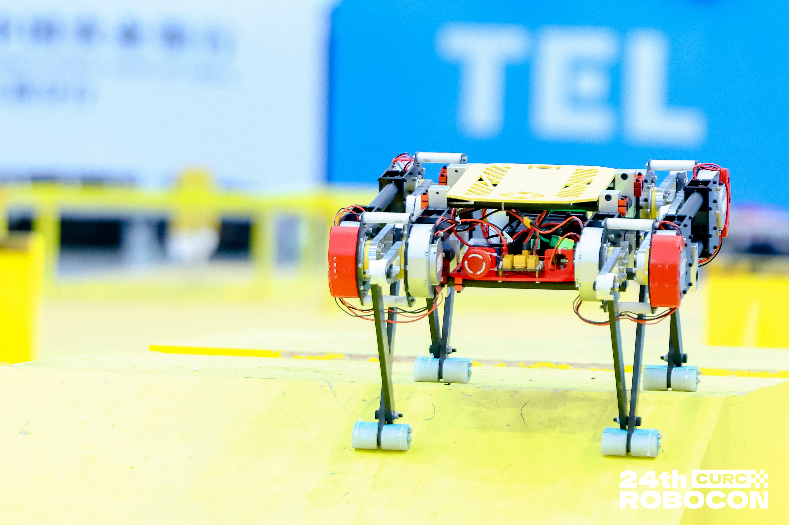

]"
title="比赛视频"
frameborder="0"
allow="accelerometer; autoplay; clipboard-write; encrypted-media; gyroscope; picture-in-picture"
allowfullscreen
>

主要成果与荣誉
[cite_start]- **竞赛奖项：** 获全国大学生机器人大赛 ROBOCON 仿生足式机器人挑战赛的竞速赛、障碍赛、越野赛**全国二等奖** [cite: 22]。
[cite_start]- **立项支持：** 《“巷陌灵犬” 面向老旧社区复杂路况的末端配送机器狗精巧设计与灵动控制》获得**国家级（省级）大学生创新训练项目立项** [cite: 22]。
查看详细技术文档 »